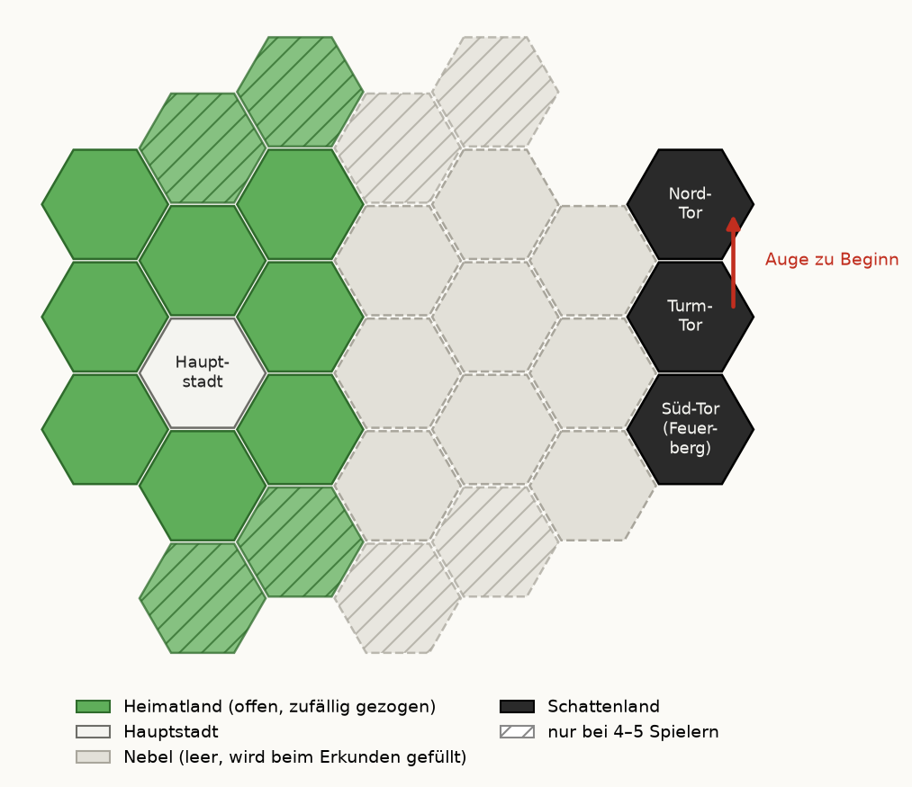

So stehen die Regeln auf den Tafeln im Deckel der Spielbox. In der Browser-Fassung baut das Spiel die Karte selbst auf.

Mit Magneten: 1. Hauptstadt hinlegen. Jeder wählt Farbe und Volk (jedes nur einmal, erste Partie ohne). Küstenvolk: wählt einen Heimatland-Platz für 1 Wasser (anlegen, sobald ein Nachbar liegt), sein Plättchen weg.
Mit Grundplatte: 1. Grundplatte zusammenstecken, Hauptstadt in ihr Feld. Jeder wählt Farbe und Volk (jedes nur einmal, erste Partie ohne). Küstenvolk: 1 Wasser auf einen Heimatland-Platz seiner Wahl, sein Plättchen weg.
2. Zu zweit oder dritt nur je 3 Wald, Acker, Weide, Hügel, Gebirge, 1 Wasser, die Ruine und ihre Plättchen.
Mit Magneten: 3. Plättchen in die Nebeldose. Je freien Heimatland-Platz blind eins ziehen, Kachel anlegen, Plättchen weg; Ruine zurück, neu ziehen. Stößt eine Kachel ab: 60° drehen.
Mit Grundplatte: 3. Plättchen in die Nebeldose. Je freien Heimatland-Platz blind eins ziehen, Kachel in das Feld, Plättchen weg; Ruine zurück, neu ziehen.
Wald: Holz Acker: Korn Weide: Pferde Hügel: Stein Gebirge: Erz
Mit Magneten: 4. Als Abstand 3 übrige Kacheln vom Heimatland zum Turm-Tor legen, Schattenland anschnappen (oben Nord-Tor, unten Süd-Tor mit Feuerberg), die 3 wieder weg.
Mit Grundplatte: 4. Schattenland in die Felder N, T, S: Nord-Tor, Turm-Tor, Süd-Tor mit Feuerberg.
5. Übrige Plättchen verdeckt mischen, je eins auf jeden Nebel-Platz.
6. Turm mit 4 Segmenten aufs Turm-Tor (zu viert, fünft 5), Auge zum Nord-Tor. Gefährten auf Start. Schicksalskarten („Karten“) mischen.
7. 2 Helden ziehen, 1 offen behalten (zu fünft 1).
8. Der Jüngste beginnt (Fahne): reihum 1 Gehöft zwischen zwei Heimatland-Kacheln (Hauptstadt zählt mit), rückwärts ein zweites, dafür 1 Rohstoff je Geländefeld daran. Ruhm-Marker auf 2.
2–5 Spieler, im Team 4, 6 oder 8. Turm vollendet (8 Segmente): Alle verlieren. Gefährten auf Feld 10: Runde samt Rundenende fertig spielen; der meiste Ruhm gewinnt (Gleichstand: mehr Rohstoffe, sonst gemeinsam).
Menschen: Bei Überfällen bringt jedes deiner Pferde 2 Abwehr (Ruhm 1).
Elben: Für 1 Korn den genommenen Würfel auf ein Gelände drehen.
Zwerge: Leuchtfeuer kosten 1 Stein weniger.
Halblinge: Ziehst du die Gefährten auf ein Feld mit Auge, wächst der Turm nicht.
Küstenvolk: Mit Gebäude am Wasser: Handel 2 : 1.
Je zwei teilen Farbe und Volk, sind abwechselnd am Zug und gewinnen gemeinsam; jede Farbe zählt als ein Spieler (auch für Kacheln, Würfel und Turm). Jede Person zieht 1 Helden, beide gehören der Farbe. Turm startet mit 1 Segment mehr.
Helden wirken einmal im Spiel, im eigenen Zug (Spürzauberin und Gelehrter nach dem Runenwurf, reihum ab dem Startspieler); dann quer legen. Karten: höchstens 3 auf der Hand, mehr unter den Stapel; ausspielen im eigenen Zug (Verstärkung beim Überfall), dann unter den Stapel. Der Eilbote ist keine Reise der Runde (die Gefährten können am Rundenende trotzdem von selbst ziehen).
Erste Partie: Erz und Pferde für Überfälle bereithalten, sie bringen auch Ruhm. Ein Gehöft an der Hauptstadt erlaubt Handel 2 : 1. Auf den Reise-Feldern 4 und 8 wächst der Turm sicher: früh an Leuchtfeuer und den Ruf denken.
1. Der Startspieler würfelt 5 Würfel (zu fünft 6) im umgedrehten Deckel. Spürzauberin und Gelehrter wirken jetzt. Dann je Auge: Turmspitze im Uhrzeigersinn zum nächsten Tor (Nord, Süd, Turm-Tor = Blick nach Westen), dort erscheint eine Horde. Augen beiseite.
2. Reihum ab dem Startspieler: 1 Würfel nehmen und ernten: Deine Gebäude bringen je Feld dieses Geländes Gehöft 1, Burg 2, Festung 3; bringt der Würfel etwas, 1 mehr. Kein Würfel mehr: 1 beliebiger Rohstoff. Dann beliebig oft bauen, handeln, reisen, Karten, Held.
3. Rundenende: Übrige Würfel ernten alle (ohne 1 mehr). Horden ziehen, vorderste zuerst, 1 Feld zur Hauptstadt; gleich kurz: der Startspieler wählt. Überfälle, die nächsten zuerst. Ist niemand gereist, ziehen die Gefährten 1 Feld von selbst (ohne Kosten und Ruhm). Startspieler wird, wer am wenigsten Ruhm hat (Gleichstand: von ihnen der Nächste links).
Gebäude (Gehöft, Burg, Festung) stehen auf Kanten zwischen zwei Kacheln, eins je Kante, nie am Schattenland. Dein Reich: alle Felder an deinen Gebäuden; neue Gehöfte an seine freien Kanten. Burg auf eigenes Gehöft, Festung auf eigene Burg. Kosten: Spielhilfe-Leiste.
Erkunden: Gehöft an einem Nebel-Plättchen: erst umdrehen, Kachel dorthin (unter eine Horde), Plättchen weg, 1 Karte ziehen.
Ruhm sofort auf die Leiste: Gehöft 1, Ausbau +1, Leuchtfeuer 2. Verliert ein Gebäude eine Stufe (bis vom Brett): −1. Alle verloren: nächstes Gehöft zwischen zwei Heimatland-Kacheln.
Mit dem Spieler am Zug frei; mit dem Vorrat 3 gleiche gegen 1, mit Gebäude an der Hauptstadt 2 gegen 1. Was nicht im Vorrat ist, gibt es nicht; reicht er für eine Ernte nicht: reihum ab dem Startspieler. Horden blockieren keine Ernte.
Horden ziehen nur über Kacheln und Plättchen. Mehrere Horden auf einem Feld: eine Figur, je weitere ein Ring darunter, ihre Figur zurück in den Vorrat; jede Figur und jeder Ring ist eine Horde. Fehlt Figur oder Ring: Turm +1. Im Nebel stehen Horden auf dem Plättchen. Wächst der Turm: Spitze gleich ausgerichtet aufsetzen.
Überfall an Feldern mit Gebäuden, an der Hauptstadt immer. Stärke 2 je Horde. Abwehr: je Burg 1, je Festung 2 (egal wem). Fehlt Abwehr, dürfen reihum ab dem Startspieler die Besitzer am Feld zahlen, bei Leuchtfeuer alle, nur mit Erz und Pferden: je 1 Abwehr und 1 Ruhm. Jeder sagt einmal an, zusammen nie mehr als nötig (Verstärkung und Pferd der Menschen dürfen überzahlen). Gezahltes geht in den Vorrat.
Reicht es: Horden in den Vorrat. Sonst: Turm +1, jedes Gebäude am Feld verliert eine Stufe, die Horden bleiben. An der Hauptstadt kommen sie danach immer in den Vorrat.
Bauen: freie Ecke mit drei Kacheln an einem Gebirge oder Hügel deines Reichs, nicht am Schattenland; je Gebirge und Hügel höchstens eins. Es gehört niemandem und brennt immer: Bei Überfällen an seinen drei Feldern und deren Nachbarn dürfen alle zahlen.
Ruf: Mit dem dritten Leuchtfeuer kommen einmal im Spiel die Verbündeten: Turm −1, wer es baut: 3 Ruhm.
Beispiel Überfall: 2 Horden (Stärke 4) am Wald, dort Rots Burg (Abwehr 1): Es fehlen 3. Rot ist Startspieler und zahlt 1 Erz (1 Ruhm). Am Nachbarfeld brennt ein Leuchtfeuer, also darf auch Blau zahlen: 2 Pferde (2 Ruhm). Abgewehrt: Horden in den Vorrat.
Höchstens 1 Feld pro Runde, im eigenen Zug, wer zuerst zahlt; Kosten und Ruhm auf der Leiste. Felder mit Auge (4, 8), auch von selbst: Turm +1, vollendet ihn aber nie. Gereist? Gefährten quer stellen, ganz am Rundenende gerade.
Am Tisch stehen diese Angaben auf der Spielhilfe-Leiste, der Reise-Leiste und den Karten.
| Bau | Kosten | Ruhm |
|---|---|---|
| Gehöft | 1 | |
| Burg (auf eigenes Gehöft) | +1 | |
| Festung (auf eigene Burg) | +1 | |
| Leuchtfeuer | 2 |
Überfall (Spielhilfe-Leiste: Schild = Erz / Pferd, +1): Jede Abwehr kostet 1 Erz oder 1 Pferd und bringt 1 Ruhm.
Wer die Gefährten auf ein Feld zieht, zahlt dessen Kosten und bekommt dessen Ruhm. Feld 10 ist der Feuerberg.
| Feld | Kosten | Ruhm | Gefahr |
|---|---|---|---|
| 1 | 1 | ||
| 2 | 1 | ||
| 3 | 1 | ||
| 4 | 2 | Turm +1 (bis 7) | |
| 5 | 2 | ||
| 6 | 2 | ||
| 7 | 2 | ||
| 8 | 3 | Turm +1 (bis 7) | |
| 9 | 3 | ||
| 10 | 4 |
Rohstoffe: Holz Stein Erz Korn Pferde
Rückseite jeder Karte: Einmal im Spiel, im eigenen Zug oder wie auf der Karte. Dann quer legen.
Rückseite jeder Karte: Fürs Erkunden: 1 Karte. Höchstens 3. Nur im eigenen Zug, dann unter den Stapel.